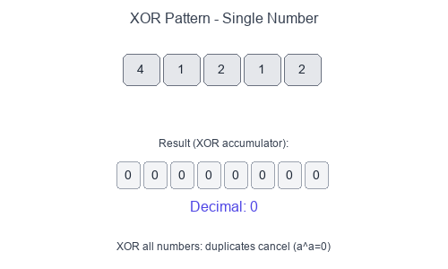

Introduction to Bitwise XOR Pattern
The Bitwise XOR pattern leverages the unique properties of the XOR (^) operator to solve problems involving pairs, duplicates, and bit manipulation efficiently—often in $O(n)$ time and $O(1)$ space.
Key XOR Properties
a ^ a = 0 # XOR with itself is 0
a ^ 0 = a # XOR with 0 is itself
a ^ b = b ^ a # Commutative
(a ^ b) ^ c = a ^ (b ^ c) # Associative
Visual Example
Finding the Single Number

When you XOR all numbers together, duplicates cancel out (since a ^ a = 0), leaving only the unique number.
When to Use
- Find a single unique element among duplicates (every other element appears twice).
- Find two unique elements among duplicates.
- Swap two numbers without a temporary variable.
- Toggle bits or check parity.
- Problems involving "missing" or "extra" numbers in a range.
Pattern Recipe (Single Number)
- Initialize
result = 0. - XOR every element:
result ^= num. - After processing all elements,
resultholds the single unique number.
Complexity
- Time: $O(n)$ — single pass through array
- Space: $O(1)$ — only one variable needed
Short Example — Python
Single Number (find unique among pairs)
def single_number(nums: list[int]) -> int:
result = 0
for num in nums:
result ^= num
return result
# Example: [4, 1, 2, 1, 2] → 4
Two Single Numbers (find two uniques)
def two_single_numbers(nums: list[int]) -> list[int]:
# Step 1: XOR all → gives xor of the two unique numbers
xor_all = 0
for num in nums:
xor_all ^= num
# Step 2: Find rightmost set bit (differs between the two)
rightmost_bit = xor_all & (-xor_all)
# Step 3: Partition and XOR separately
num1, num2 = 0, 0
for num in nums:
if num & rightmost_bit:
num1 ^= num
else:
num2 ^= num
return [num1, num2]
Swap Without Temp Variable
def swap(a: int, b: int) -> tuple[int, int]:
a = a ^ b
b = a ^ b # b = (a ^ b) ^ b = a
a = a ^ b # a = (a ^ b) ^ a = b
return a, b
Common Pitfalls
- Forgetting that XOR only works for finding singles when all other elements appear exactly twice.
- For "two single numbers", you must partition using a differing bit—otherwise both numbers end up in the same group.
- Integer overflow isn't an issue in Python, but be careful in other languages with fixed-width integers.
Problems to Practice
- Single Number
- Single Number II (elements appear 3 times except one)
- Single Number III (two unique numbers)
- Missing Number
- Complement of Base 10 Number